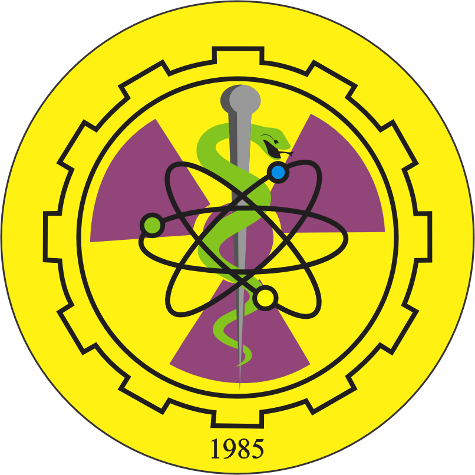
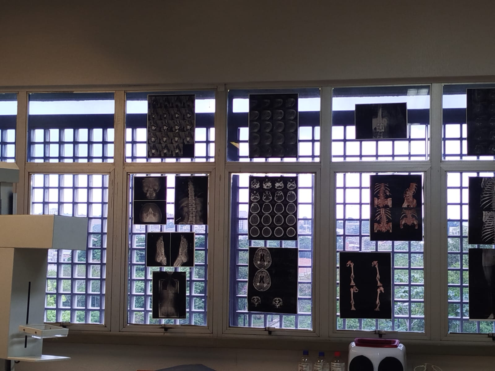
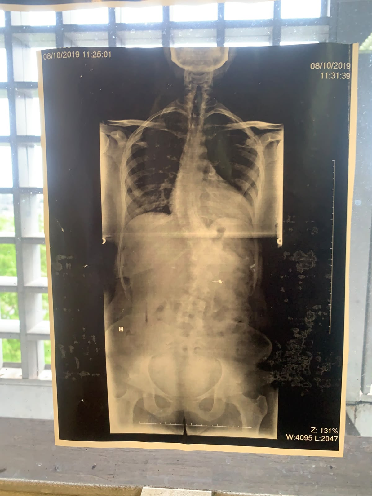
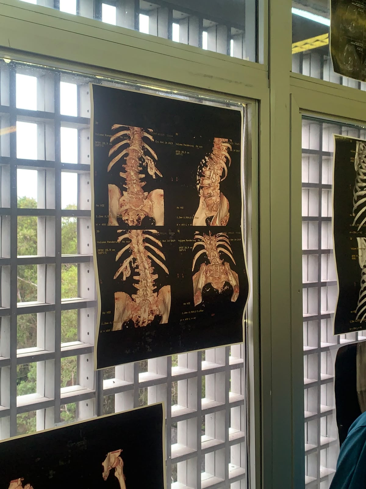
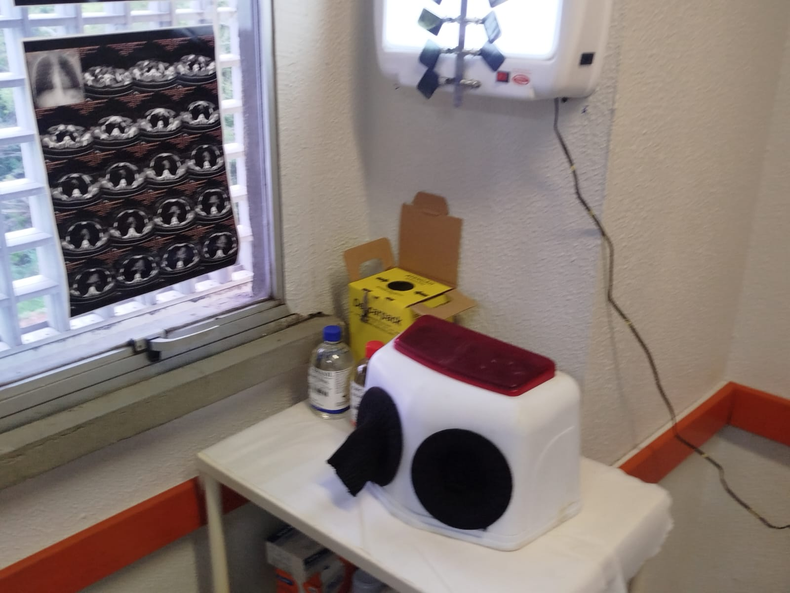

RADIOLOGIA
Em nossa visita à sede da Unip em Manaus também passamos pelo curso de radiologia. Quando chegamos, um professor nos recepcionou e nos explicou como funciona o curso e a abrangência de todas as suas áreas de atuação. Por toda a sala haviam fotos de eletrocardiogramas, encefalogramas, raios-x, ultrassonografias e outros procedimentos que quem atua na área de radiologia pode efetuar. Além disso, haviam várias máquinas de verdade e outras feitas de papelão que pudemos tocar e observar. No geral, a visita foi muito boa.



